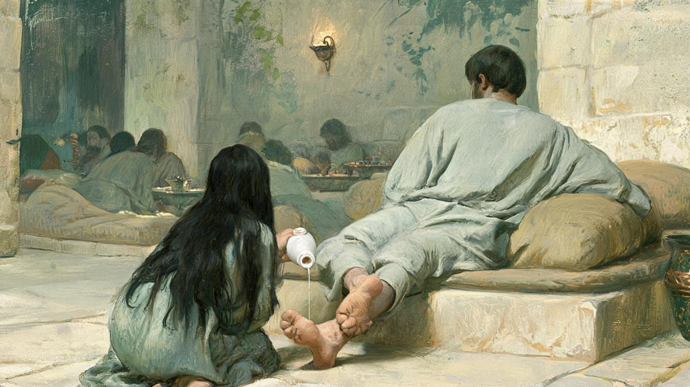

향유를 부은 여자는 누구였을까
바리새인의 잔칫집에 한 여자가 들어와 예수님의 발을 눈물로 적시고 머리털로 닦았어요. 그리고 발에 입을 맞추고 향유를 부었어요. 이 여자는 누구였을까요? 그리고 왜 그렇게까지 했을까요?
한눈에 보기
이 여자의 이름은 무엇이었을까요?
이름이 없어요. 누가는 “그 동네의 죄인”이라고만 불러요.
그 동네에 죄를 지은 한 여자가 있어 예수께서 바리새인의 집에 앉아 계심을 알고 향유 담은 옥합을 가지고 와서 예수의 뒤로 그 발 곁에 서서 울며 눈물로 그 발을 적시고 자기 머리털로 닦고 그 발에 입맞추고 향유를 부으니
누가복음 7:37–38 · 개역개정
원문은 “그 동네에서 죄인이던 여자”(γυνὴ ἥτις ἦν ἐν τῇ πόλει ἁμαρτωλός)예요. 무슨 죄였는지는 한 마디도 없어요. 누가는 이 여자의 이름도, 사는 곳도, 그 뒤의 이야기도 적지 않아요. 누가가 알려 주는 것은 그 동네 사람들이 그를 “죄인”으로 알았다는 것뿐이에요. 바리새인 시몬도 속으로 “죄인인 줄”이라고 말해요(7:39).
37절을 개역한글은 “죄인인 한 여자”로, 개역개정은 “죄를 지은 한 여자”로 옮겼어요. 헬라어는 “죄인”(ἁμαρτωλός) 한 낱말이에요. 누가복음은 이 낱말을 열여덟 번 써서 네 복음서 가운데 가장 많이 써요. 7장 안에서도 “세리와 죄인의 친구”(34절), “그 동네의 죄인”(37절), “죄인인 줄”(39절)로 세 번 이어져요.
막달라 마리아가 아니었나요?
아니에요. 누가는 바로 다음 장에서 막달라 마리아를 새로 소개해요.
누가복음 8:2은 예수님을 따르던 여자들을 소개하면서 “일곱 귀신이 나간 자 막달라인이라 하는 마리아”를 처음 등장시켜요. 7장의 여자가 막달라 마리아였다면 한 단락 뒤에서 처음 보는 사람처럼 소개할 까닭이 없어요. 게다가 복음서에서 귀신 들림은 죄와 같은 것으로 다뤄지지 않아요.
베다니의 마리아도 아니에요. 그는 누가복음 10:38–42에 마르다의 동생으로 따로 나와요. 요한복음 12장에서 그가 향유를 붓는 장면은 때와 장소가 누가 7장과 전혀 달라요.
| 인물 | 처음 나오는 곳 | 복음서가 밝히는 것 | 후대 전승이 덧붙인 것 |
|---|---|---|---|
| 이름 없는 여자 | 누가복음 7:37 | 그 동네에서 죄인으로 알려짐. 시몬의 집에서 예수님의 발에 향유를 부음 | 막달라 마리아와 같은 사람 |
| 막달라 마리아 | 누가복음 8:2 | 일곱 귀신이 나감. 예수님을 따르며 섬김. 십자가와 무덤을 지켜봄. 부활하신 예수님을 처음 만남(요 20장) | 회개한 창녀 |
| 베다니의 마리아 | 누가복음 10:39 | 마르다의 동생, 나사로의 누이. 예수님 발치에서 말씀을 들음. 수난 직전 베다니에서 발에 향유를 부음(요 12:3) | 막달라 마리아와 같은 사람 |
세 사람을 한 사람으로 묶은 것은 591년경 로마의 교황 그레고리우스 1세예요. 그는 부활절 무렵의 설교에서 이렇게 말했어요.
누가가 죄 지은 여자라고 부르고 요한이 마리아라고 이름한 이 여자를, 우리는 마가가 일곱 귀신이 쫓겨났다고 증언한 그 마리아라고 믿는다.
그레고리우스 1세 『복음서 설교』 33 (PL 76:1239)
눈여겨볼 낱말은 “우리는 믿는다”(credimus)예요. 본문에서 확인한 사실이 아니라 추론으로 내놓은 말이었어요. 그레고리우스는 일곱 귀신을 “모든 악덕”으로 풀이했고, 설교의 목적은 비난이 아니라 회개를 칭찬하는 데 있었어요. 그래도 이 설교 뒤로 서방 교회에서는 “회개한 창녀 막달라 마리아”라는 모습이 굳어졌어요.
동방 교회는 이 동일시를 받아들이지 않았어요. 막달라 마리아를 “향유를 가진 여인”, “사도와 동등한 자”로 기리며 다른 여자들과 구분해 왔어요. 로마 가톨릭은 1969년 전례력을 고치면서 동일시를 거두었고, 2016년에는 교황청 경신성사성이 막달라 마리아의 기념일을 축일로 올리며 그를 “사도들의 사도”라고 불렀어요.
4복음서의 향유 이야기는 몇 번일까요?
네 번 나오지만, 사건은 둘로 보는 견해가 많아요.
| 누가 7:36–50 | 마가 14:3–9 | 마태 26:6–13 | 요한 12:1–8 | |
|---|---|---|---|---|
| 때 | 갈릴리 사역 중간 | 유월절 이틀 전 14:1 | 유월절 이틀 전 26:2 | 유월절 엿새 전 12:1 |
| 곳 | 바리새인 시몬의 집 | 베다니, 나병환자 시몬의 집 | 베다니, 나병환자 시몬의 집 | 베다니, 나사로와 마르다가 함께 |
| 여자 | 이름 없음, 그 동네의 죄인 | 이름 없음 | 이름 없음 | 마리아 |
| 부은 곳 | 발 눈물·머리털·입맞춤 | 머리 | 머리 | 발 머리털로 닦음 |
| 값 | 없음 | 300 데나리온 이상 | 없음 | 300 데나리온 |
| 불평 | 시몬이 속으로 | 어떤 사람들 | 제자들 | 가룟 유다 |
| 예수님의 해석 | 죄 사함과 사랑 | 장례를 미리 준비함 | 장례를 준비함 | 장례 날을 위해 간직함 |
마가, 마태, 요한은 베다니에서 있었던 한 사건을 전해요. 셋 다 수난 직전이고, 셋 다 “장례”를 말해요. 요한만 여자의 이름을 마리아라고 밝혀요. 누가 7장은 때도, 집주인도, 주제도 달라서 따로 일어난 일로 보는 견해가 많아요. 누가는 마가의 수난 기사를 따라가면서도 베다니 향유 장면만은 건너뛰어요. 누가복음 22:1–6은 음모에서 바로 유다로 넘어가요. 비슷한 장면을 이미 7장에 실었기 때문이라고 보는 경우가 많아요.
| 해법 | 근거 | 판정 |
|---|---|---|
| 베다니 사건 하나와 갈릴리 사건 하나다 | 때·장소·집주인·주제가 다름. 누가가 베다니 기사를 뺌(WBC) | 유력 |
| 네 기사가 모두 한 사건이다 | “시몬”, 옥합, 발과 머리털. 다만 시몬은 흔한 이름이고 때와 주제가 맞지 않음 | 가설 |
| 같은 여자가 두 번 부었다(누가 7장 = 베다니 마리아) | Feuillet 1975. 요 12장이 앞의 일을 일부러 되풀이했다고 봄. 요한과 마가의 관계를 설명하지 못함(WBC) | 가설 |
| 누가 7장의 여자는 막달라 마리아다 | 눅 8:2에서 처음 소개됨. 복음서에 근거 없음. 591년 설교에서 시작 | 반증 |
그런데 누가와 요한만 겹치는 곳이 하나 있어요. 향유를 발에 붓고 머리털로 닦는 장면이에요. “닦다”(ἐκμάσσω)라는 동사는 신약에 다섯 번 나오는데, 누가와 요한에만 있어요.
요한 13:5가 흥미로워요. 마리아가 예수님의 발을 닦은 그 동사로, 다음 장에서 예수님이 제자들의 발을 닦으세요. 누가와 요한이 발과 머리털을 함께 쓰는 까닭은 이야기가 전해지는 동안 두 장면이 서로 영향을 주었기 때문으로 봐요(WBC). 어느 쪽에서 어느 쪽으로 갔는지는 미결이에요.
왜 머리가 아니라 발이었을까요?
식사 자세 때문이에요. 발이 먼저 닿았어요.
개역개정이 “앉으셨다”로 옮긴 말은 원문으로 “기대어 누웠다”(κατεκλίθη)예요. 잔치에서는 낮은 긴 의자에 비스듬히 누워 먹었어요. 머리는 식탁 쪽, 발은 바깥쪽이었어요. 그래서 여자가 “뒤로 그 발 곁에” 섰을 때 닿는 곳은 발이었어요.
잔칫집에 모르는 사람이 들어온 것도 이상한 일이 아니었어요. 초대받지 않은 사람도 가장자리에 서서 손님들의 대화를 들을 수 있었어요(IVP 배경주석). 누가복음 주석가 놀랜드는 “당시의 삶은 우리의 삶보다 훨씬 공적이었다”고 말해요.
놀랜드는 여자가 미리 계획한 것은 향유를 붓는 일 하나뿐이었다고 봐요. 향유는 원래 머리에 바르는 것이었어요. 그런데 눈물이 발에 떨어졌고, 닦을 것이 없어 머리털을 썼고, 그 가까움이 입맞춤으로 이어졌고, 머리까지 가지 못하니 발에 향유를 부었다는 거예요. 차례로 이어진 반응이라는 해석이에요.

눈물, 머리털, 입맞춤은 무엇을 뜻했을까요?
하나하나가 체면을 내려놓는 행동이었어요.
슬픔보다 회한과 감사의 눈물로 읽어요.
사람들 앞에서 머리를 푸는 부끄러움을 스스로 택했어요.
그치지 않는 입맞춤이에요. 탕자의 아버지에게도 쓰인 동사예요.
머리에 바르던 향유를 가장 낮은 발에 부었어요.
눈물
눈물은 슬픔보다 회한과 감사의 눈물로 봐요. 놀랜드는 이 여자를 이미 평안을 찾은 사람으로 보고, 그 눈물을 “마음에서 우러나오는 진실하고 따뜻한 감사”와 잇는 눈물로 읽어요.
머리털
머리털은 더 무거운 이야기예요. 유대 사회에서 여자가 사람들 앞에서 머리를 푸는 것은 부끄러운 일이었어요. 200년경 정리된 『미쉬나』는 아내를 위자료 없이 내보낼 수 있는 사유를 이렇게 꼽아요.
유대 여인의 관습을 어기는 것은 무엇인가. 머리를 드러낸 채 밖에 나가는 것, 시장에서 실을 잣는 것, 아무 남자와나 이야기하는 것이다.
미쉬나 케투보트 7:6
민수기 5:18에서도 제사장은 부정을 의심받는 아내의 “머리를 풀어요”(וּפָרַע, 우파라). 미쉬나 소타 1:5는 그 장면을 성전 니카노르 문에서 머리를 풀어 헤치는 일로 그려요. 이 여자는 스스로 그 부끄러움을 택한 셈이에요. 다만 케투보트 7:6은 결혼한 여자에 대한 규정이고, 이 여자가 결혼했는지는 본문이 말하지 않아요.
입맞춤
입맞춤은 καταφιλέω라는 강한 동사예요. 45절은 “그치지 않고 입 맞추었다”고 적어요. 같은 동사가 탕자를 끌어안은 아버지에게도 쓰여요(15:20). 놀랜드는 발 입맞춤을 용서를 비는 몸짓보다 감사의 표현으로 읽어요.
향유
향유는 원래 머리에 바르는 것이었어요. 그것을 발에 부은 것은 가장 낮은 곳을 고른 행동이에요. IVP 배경주석은 향유가 이 여자의 생업 도구였을 가능성도 말하는데, 이것은 가능성일 뿐이에요.
본문은 말하지 않아요. IVP 배경주석은 창녀였거나 적어도 행실로 소문난 여자였을 것으로 봐요. 베르치만(2017)은 더 조심스러워요. 이 여자는 당시 잔치에 불려 온 접대부가 하던 일을 하나도 하지 않았어요. 다만 머리를 풀고 발을 만지고 입 맞춘 행동은 어떻든 오해를 사기 쉬웠다고 봐요.
시몬은 무례했을까요?
학자들 사이에 의견이 갈려요. 분명한 것은 대비예요.
예수님은 44–46절에서 처음으로 여자를 돌아보시며 시몬에게 세 가지를 나란히 말씀하세요.
| 손님 대접 | 시몬 | 여자 |
|---|---|---|
| 발 씻을 물 창 18:4 · 24:32 | 주지 않음 | 눈물로 적시고 머리털로 닦음 |
| 인사 입맞춤 φίλημα | 하지 않음 | 발에 입 맞추기를 그치지 않음 καταφιλέω |
| 머리에 바르는 기름 ἔλαιον · 시 23:5 | 바르지 않음 | 발에 향유를 부음 μύρον |
기름은 향유로, 머리는 발로 바뀌어요. 여자 쪽은 값이 올라가고 닿는 곳은 낮아져요.
그러면 시몬이 손님을 푸대접한 걸까요? 두 주석이 다르게 봐요.
| 주석 | 견해 | 근거 |
|---|---|---|
| IVP 배경주석 | 무례했다 | 아브라함이 손님에게 발 씻을 물을 가져온 이야기(창 18:4)를 생각하면 변명할 여지가 없어요 |
| 놀랜드 (WBC) | 반듯하기만 했다 | 유대 문헌에서 발 씻을 물, 입맞춤, 머리 기름은 의무 관례로 나오지 않아요 |
놀랜드를 따르면 예수님의 말씀은 시몬의 무례가 아니라 두 사람의 사랑의 크기를 가리켜요.
베르치만(2017)은 여기서 한 걸음 더 나가요. 초대한 사람은 시몬이지만, 예수님은 여자의 몸짓을 “대접”으로 다시 읽어 그를 이 잔치의 진짜 주인으로 세우신다는 거예요. 판단하던 시몬이 도리어 판단을 받아요.
사랑해서 용서받았을까요, 용서받아서 사랑했을까요?
용서받아서 사랑했다고 보는 견해가 훨씬 많아요.
이러므로 내가 네게 말하노니 그의 많은 죄가 사하여졌도다 이는 그의 사랑함이 많음이라 사함을 받은 일이 적은 자는 적게 사랑하느니라
누가복음 7:47 · 개역개정
한국어로 읽으면 “사랑이 많았기 때문에 용서받았다”로 읽히기 쉬워요. 헬라어 “왜냐하면”(ὅτι)은 두 가지로 읽을 수 있어요. 사랑이 용서의 원인이라는 읽기와, 사랑이 용서받았다는 증거라는 읽기예요. 문법만으로는 정해지지 않아요. 그래서 앞뒤 문맥이 결정해요.
문맥은 증거 쪽을 가리켜요. 근거가 다섯이에요.
- 바로 앞 비유의 순서. 오백 데나리온 빚진 사람과 오십 데나리온 빚진 사람이 둘 다 탕감을 받아요. 예수님은 “누가 그를 더 사랑하겠느냐”고 물으세요(7:42). 탕감이 먼저이고 사랑은 그다음이에요.
- 47절 뒷부분. “사함을 받은 일이 적은 자는 적게 사랑하느니라.” 여기서도 사함이 먼저예요.
- 동사의 모양. “사하여졌다”(ἀφέωνται)는 완료형이에요. 이미 사함받아 그 상태에 있다는 뜻이에요.
- “이러므로”(οὗ χάριν). 47절을 앞의 비유와 묶어 줘요(WBC).
- 50절의 선언. 예수님은 여자를 보내시며 구원의 근거를 사랑이 아니라 믿음으로 대세요.
예수께서 여자에게 이르시되 네 믿음이 너를 구원하였으니 평안히 가라 하시니라
누가복음 7:50 · 개역개정
본문의 순서를 차례로 놓으면 이렇게 돼요.
| 읽기 | 누가 이렇게 읽나 | 판정 |
|---|---|---|
| 많이 사랑하는 것을 보면 많이 사함받았음을 알 수 있다 | 놀랜드(WBC). 19세기 주석 벵겔·마이어·펄핏·길·반즈 등 거의 전원 “결과에서 원인을 아는 논증” | 유력 |
| 많이 사랑했기 때문에 사함받았다 | “사랑으로 완성된 통회”를 말하는 옛 가톨릭 해석. 마이어가 이를 반박함 | 비유와 충돌 |
| 사함받아 사랑하고, 사랑하여 사함받는다 | 케임브리지 성경(19세기) | 절충 |
최근 연구도 결론은 크게 다르지 않아요. 스크레드카(2022)는 문법상 두 방향이 모두 가능하다고 인정하고, 이 여자의 행동이 “사랑 가득한 회개”인지 “사랑 가득한 감사”인지 열어 둬요. 그런데 위의 셋째 숫자 칸처럼 이 단락에는 “회개”라는 말이 한 번도 없어요. 여자는 죄를 고백하지도 않아요. 본문이 보여 주는 것은 감사 쪽이에요.
48절 “네 죄 사함을 받았느니라”도 새로 용서하는 말이 아니라고 봐요. 놀랜드는 이 말을 이미 받은 용서를 예수님이 자신의 권위로 사람들 앞에서 확인해 주시는 말로 읽어요. 그래서 함께 앉은 손님들의 물음이 곧바로 “이가 누구이기에 죄도 사하는가”(7:49)로 옮겨 가요.
그녀는 언제 용서받았을까요?
본문은 말하지 않아요. 다만 앞 단락이 실마리를 줘요.
이 장면 바로 앞에서 누가는 “모든 백성과 세리들은 이미 요한의 세례를 받았다”고 적어요(7:29). 그리고 사람들은 예수님을 “세리와 죄인의 친구”라고 불렀어요(7:34). 놀랜드는 이 문맥에서 여자가 요한의 세례나 예수님의 말씀을 통해 이미 용서를 경험했고, 그 감사를 표하러 왔다고 봐요. 추론이지만 문맥과 잘 맞아요.
누가복음 7장 전체를 보면 흐름이 보여요. 이방인 백부장(1–10절), 아들을 잃은 과부(11–17절), 세례를 받은 세리들(29절), 그리고 이 여자예요. 예수님을 알아보고 받아들인 사람은 늘 뜻밖의 사람들이었어요. 그래서 이 장면은 바로 앞 35절 “지혜는 자기의 모든 자녀로 인하여 옳다 함을 얻느니라”의 실례로 읽혀요(WBC).
정리하면
| 항목 | 근거 | 판정 |
|---|---|---|
| 누가 7장의 여자는 이름이 밝혀지지 않았다 | 7:37 “그 동네의 죄인”뿐 | 확인 |
| 그 여자는 막달라 마리아다 | 눅 8:2에서 새로 소개됨. 동일시는 그레고리우스 설교 33(591년경)에서 시작 | 반증 |
| 막달라 마리아는 창녀였다 | 복음서 어디에도 없음. 동방 교회는 구분, 가톨릭은 1969년 동일시 삭제 | 반증 |
| 향유 사건은 베다니 하나, 갈릴리 하나다 | 때·곳·집주인·주제 차이. 누가가 베다니 기사를 뺌 | 유력 |
| 발을 닦은 장면은 누가와 요한에만 있다 | ἐκμάσσω 신약 5회, 눅 7:38·44 · 요 11:2·12:3·13:5 | 확인 |
| 공개적으로 머리를 푸는 것은 수치로 여겨졌다 | 민 5:18, 미쉬나 케투보트 7:6 · 소타 1:5 (기혼 여성 규정, 200년경 편집) | 확인 범위 주의 |
| 47절의 사랑은 용서의 원인이 아니라 증거다 | 7:41–43 비유, 47b, ἀφέωνται 완료, 50절 믿음 | 유력 |
| 이 단락은 여자의 “회개”를 말한다 | μετάνοια · μετανοέω 0회, 죄 고백 없음 | 반증 |
| 시몬은 손님을 무례하게 대했다 | IVP는 무례로, WBC는 의무 관례가 아니었다고 봄 | 이견 |
| 여자는 요한의 세례로 먼저 용서를 경험했다 | 7:29 · 7:34 문맥에서 나온 추론(WBC) | 가설 |
| 여자는 창녀였다 | 본문은 죄의 내용을 말하지 않음 | 미결 |
어려운 말 풀이
- 옥합 ἀλάβαστρον
- 설화석고로 만든 작은 향유 병이에요. 향이 오래 간다고 여겨져 비싼 향유를 담았어요. 마가복음에서는 병 목을 깨뜨려 부어요(14:3).
- 나드 νάρδος
- 히말라야 쪽에서 나는 풀뿌리로 만든 값비싼 향유예요. 마가와 요한은 베다니 사건의 향유를 “순전한 나드”라고 해요.
- 데나리온 δηνάριον
- 로마의 은화예요. 농사 품꾼의 하루 품삯쯤이었어요(마 20:2). 300 데나리온은 거의 한 해 품삯이에요.
- 미쉬나 Mishnah
- 유대교의 구전 율법 해석을 200년경에 정리한 책이에요. 예수님보다 늦게 편집되어 1세기 관습을 그대로 보여 준다고 단정할 수는 없어요.
- 완료형
- 헬라어에서 이미 끝난 일이 지금까지 그 결과로 남아 있음을 나타내는 동사 모양이에요. “사하여졌다”(ἀφέωνται)가 완료형이에요.
- 전례력 典禮曆
- 교회가 한 해 동안 기념하는 축일과 성인의 날을 정해 둔 달력이에요. 날마다 읽을 성경과 기도문도 여기에 맞춰요.
- 수용사 受容史
- 한 본문이 후대에 어떻게 읽히고 설교되고 그려졌는지의 역사예요. “막달라 마리아는 창녀”는 본문이 아니라 수용사에 속해요.
근거 자료
헬라어 통계는 SBL 헬라어 신약(SBLGNT)의 형태소 자료를 직접 집계한 값이며, 비잔틴 다수본문(RP2018)과 대조한 결과 7:36–50에는 뜻을 바꾸는 이문이 없었습니다. 어순, 36절 “집”의 낱말, 42절 εἰπέ의 유무 정도의 차이만 있습니다.
미쉬나와 민수기는 Sefaria의 히브리어 원문과 영역을 대조했습니다. 그레고리우스의 설교는 영역본과 라틴어 인용문으로 확인했으나 라틴어 전문을 대조하지는 못했습니다. 1969년 전례력 개정과 동방 교회의 구분은 2차 자료로 확인했습니다.
베르치만(2017)은 논문 요약을, 스크레드카(2022)는 초록과 요약을 확인했으며 전문을 읽지는 못했습니다. 페이예, 뢰닝, 피츠마이어 등은 놀랜드의 WBC 주석을 통해 간접 확인했습니다.
- SBLGNT / MorphGNT 형태소 자료 — ἐκμάσσω(5회) · καταφιλέω(6회) · δάκρυον · ἀλάβαστρον · μύρον · ἀλείφω · χαρίζομαι · ἁμαρτωλός · μετάνοια · μετανοέω 집계, 눅 7:36–50 · 막 14:3–5 · 마 26:7–8 · 요 11:2 · 12:3–5 원문 확인
- Robinson–Pierpont 비잔틴 다수본문 2018, 누가복음 7:36–50 대조
- 미쉬나 케투보트 7:6 · 소타 1:5, 민수기 5:18 — Sefaria 원문·영역
- 그레고리우스 1세 『복음서 설교』 33 (PL 76:1239) — R. Pearse 영역 소개, 라틴어 인용문 대조
- 교황청 공보실, “Mary Magdalene, apostle of the apostles” (2016.6.10) — 경신성사성 교령(2016.6.3) 해설
- J. Nolland, 『WBC 성경주석 35 누가복음(상)』 (솔로몬) 645–657쪽 — 구조, 향유 전승의 관계, 행동의 해석, 44–46절 관습, 47절 ὅτι, 48절 해석
- 『IVP 성경배경주석 신약』 누가복음 7:36–50 해설 — 식사 자세, 구경꾼, 머리를 드러낸 여자, 입맞춤, 제사장 없는 죄 사함 선포
- D. Bertschmann, “Hosting Jesus: Revisiting Luke’s ‘Sinful Woman’ (Luke 7.36–50) as a Tale of Two Hosts”, Journal for the Study of the New Testament 40.1 (2017) 30–50 — 요약 확인
- S. Szkredka, “Between Clinical and Biblical Conceptualizations of Guilt and Shame: Luke 7:36–50 as a Case Study”, Pastoral Psychology 71 (2022) 313–323 — 초록 확인
- 19세기 주석(벵겔, 마이어, 엘리콧, 케임브리지, 펄핏, EGT, 길, 반즈) 누가복음 7:47 — biblehub 공개본
- 대한성서공회 『성경전서 개역개정판』·『개역한글판』 (장절 표기와 짧은 인용)